The Buddy System · A LinkedIn campaign, collected
Fourteen posts, twice —the whole campaign, kept.
In the fall of 2026, Dave Dell'Aquila told the 40-year story of an idea on LinkedIn — one post a day, in two series. Feeds scroll away. This package keeps the campaign: every post as it ran, and the second series as it stands.
Series 1 — one app.
Oct 20 – Nov 2, 2026. The origin arc — a 1987 concept video, a 1993 Mac program called Rae Assist, its first user coming back — and then the present day: Money Buddy, the first buddy out the door, and a tip jar for a business model. All fourteen posts are live on LinkedIn; each page here carries the copy exactly as published, the image that ran with it, and the link to the post itself.
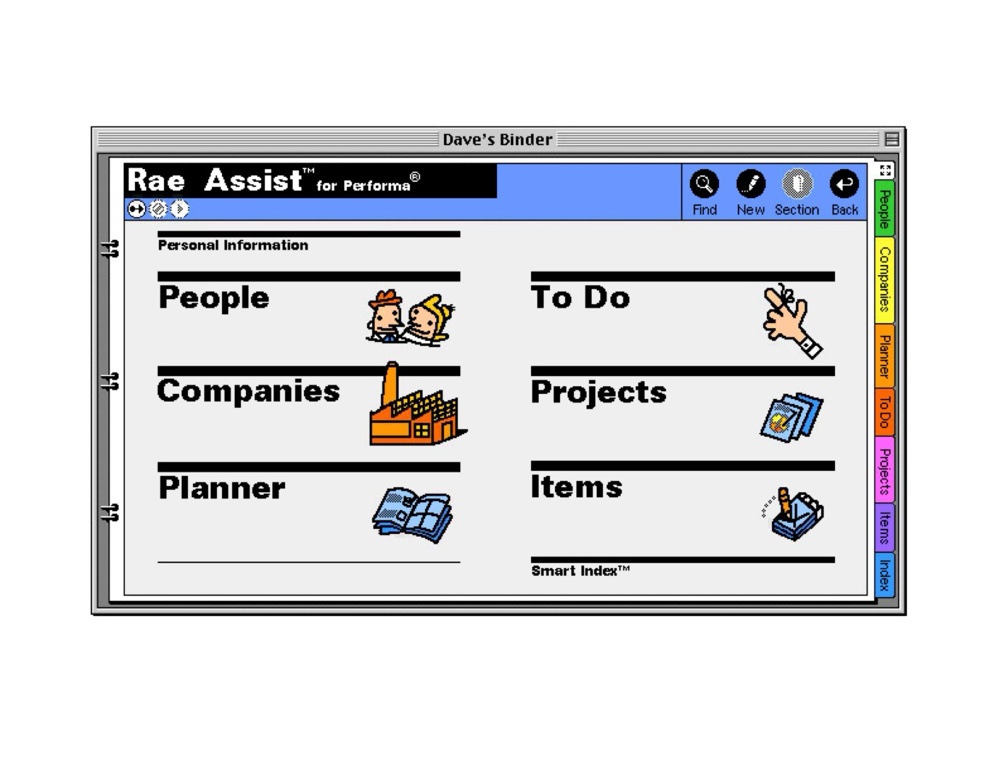
Day 1 The 40-year arc Tue Oct 20, 2026 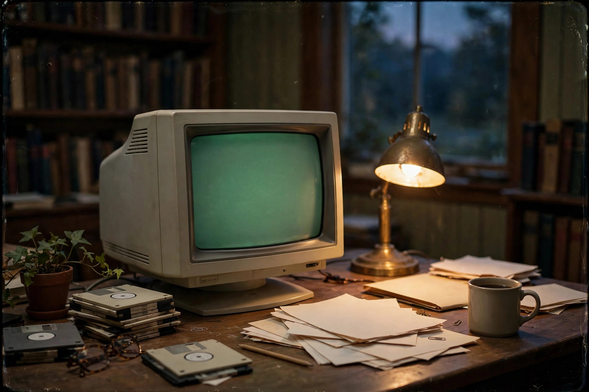
Day 2 The Knowledge Navigator Wed Oct 21, 2026 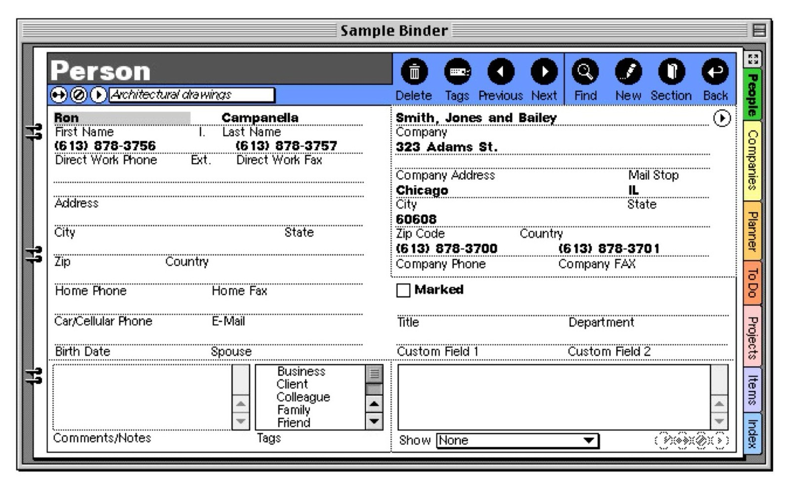
Day 3 Rae Assist, 1993 Fri Oct 23, 2026 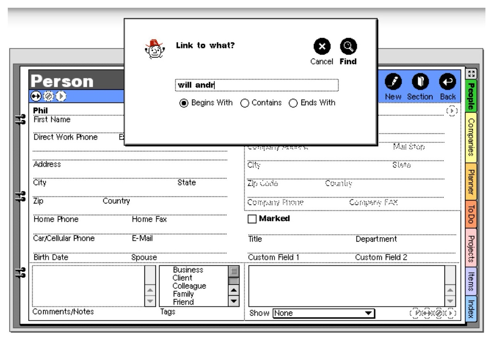
Day 4 The fall Fri Oct 23, 2026 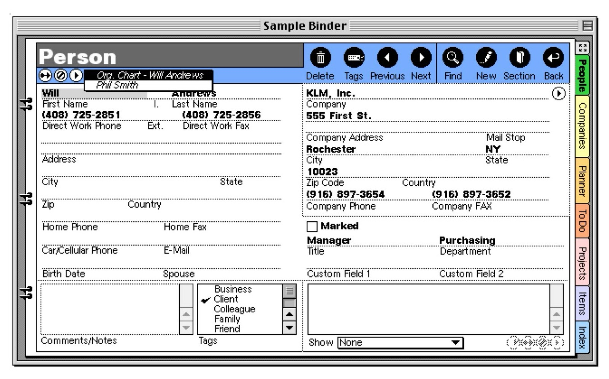
Day 5 Penny's return Sat Oct 24, 2026 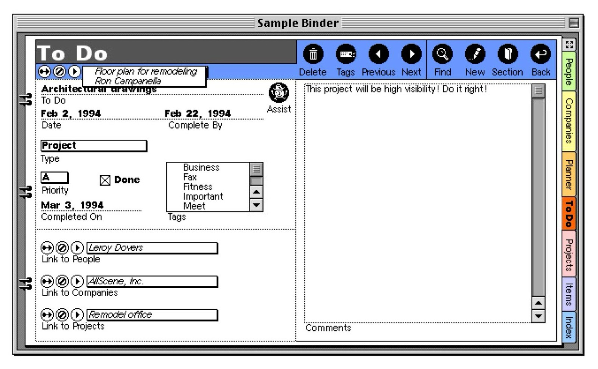
Day 6 Why now Sun Oct 25, 2026 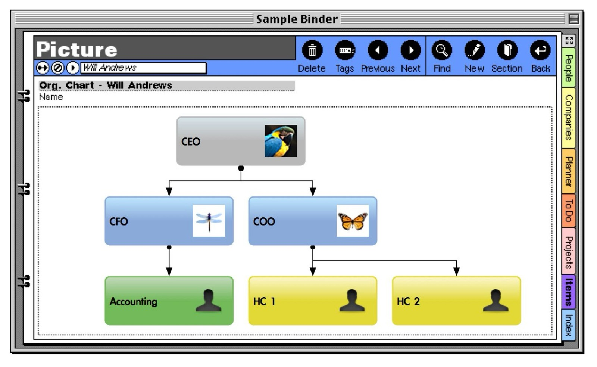
Day 7 What it is — a staff Mon Oct 26, 2026 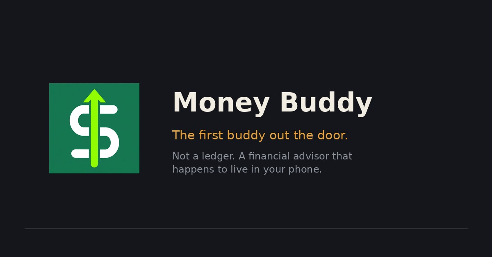
Day 8 The trojan horse Tue Oct 27, 2026 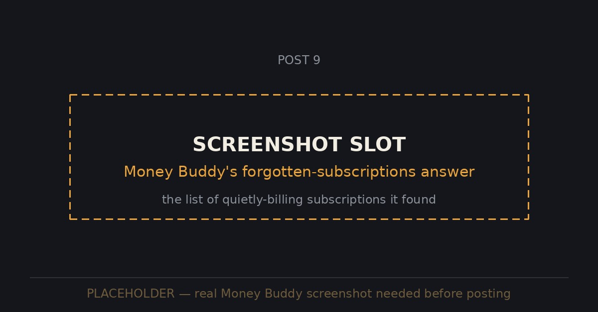
Day 9 Forgotten subscriptions Fri Oct 30, 2026 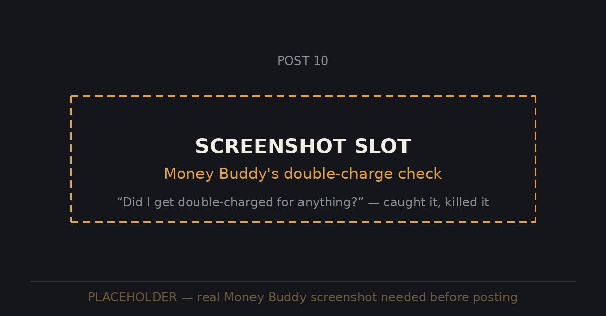
Day 10 Double-charged Thu Oct 29, 2026 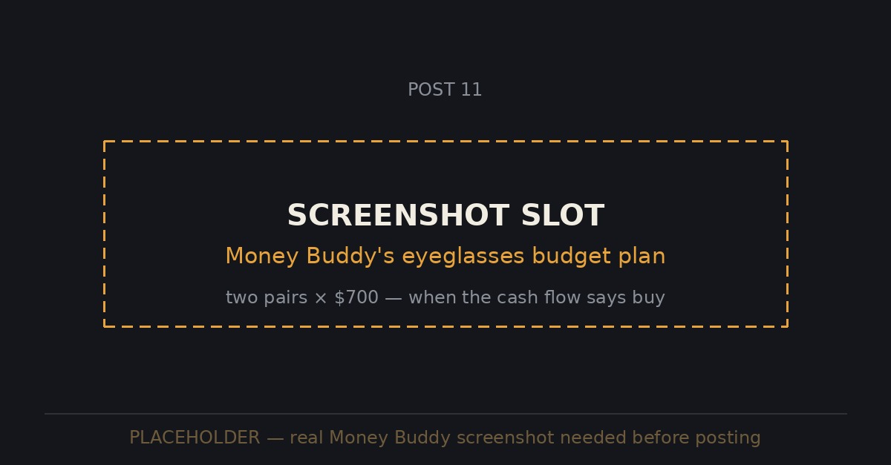
Day 11 The eyeglasses story Sat Oct 31, 2026 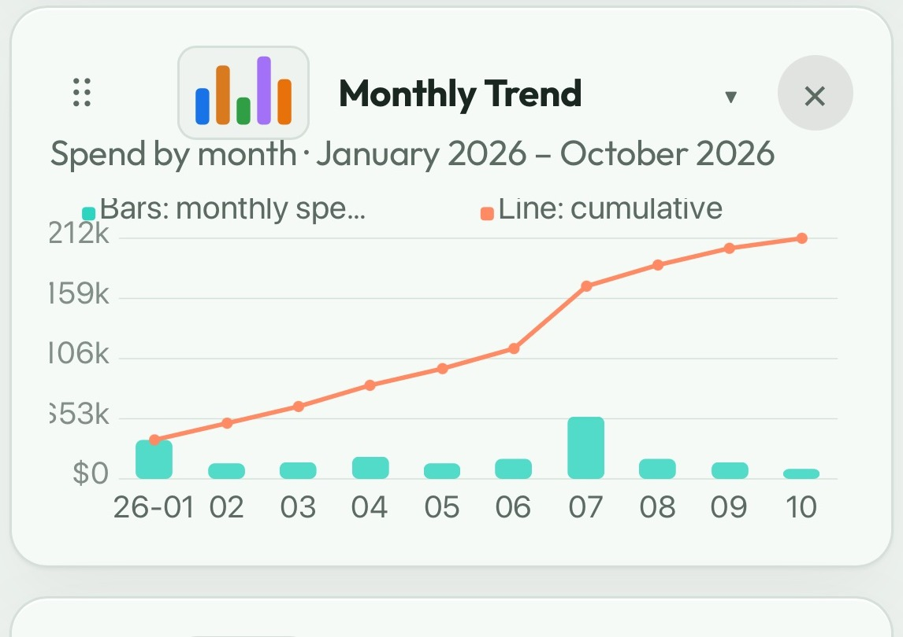
Day 12 One picture Sat Oct 31, 2026 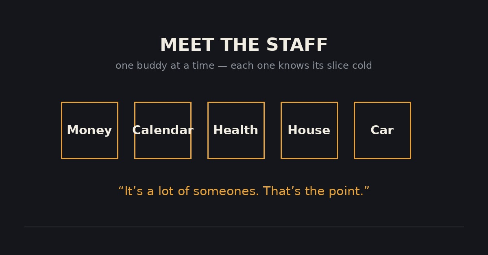
Day 13 The staff grows Sun Nov 1, 2026 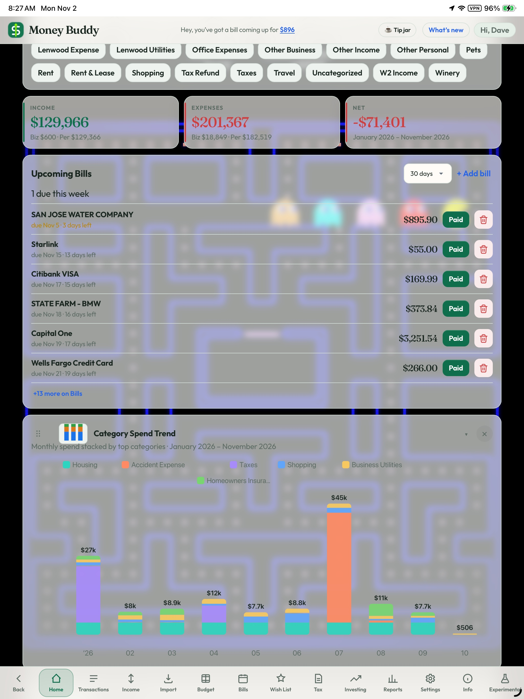
Day 14 The tip jar Mon Nov 2, 2026 Series 2 — the whole staff.
Series 1 was one app. Series 2 is the platform: the staff model, the dashboard, the briefings and the standup, two newspapers, an hourly chime, a joke vault — Money Buddy reframed as one desk among many. The slate was presented on Nov 2, 2026 with a proposed run of Nov 3–16, gated on Dave's green light. The green light never came, and the window closed unposted — so these pages present the slate as written: beat, draft copy, and the screenshot each post called for. The tour that was planned, kept on the record.
Post 1 The system Proposed for Nov 3, 2026 Series 1 was one app. This is the whole staff — the reveal that Money Buddy is one desk in a 176-buddy office. Post 2 Anatomy of a buddy Proposed for Nov 4, 2026 What a buddy actually is: a thread you can talk to, a repo that remembers, a homepage showing current state, an inbox it triages. Post 3 The chief of staff Proposed for Nov 5, 2026 Astro: one conversation routes everything; Dave directs, the staff works. The director's-desk model. Post 4 The morning briefing Proposed for Nov 6, 2026 The day starts assembled: news, calendar, reminders, tonight's dinner — local to wherever Dave is that week. Post 5 The standup, in their own voices Proposed for Nov 7, 2026 The audio standup: every buddy reports briefly, each in its own cast voice — a four-minute radio play with the coffee. Post 6 The Morning Edition Proposed for Nov 8, 2026 Brand new (launched Nov 2): Dave's personal front page — briefing, full standup transcript, headlines, and decision cards with tappable options that route themselves. Post 7 The Fiddletown Gazette Proposed for Nov 9, 2026 The staff publishes a small-town paper: three editions a day, foothills history back to the Gold Rush, and the beloved Critter Desk. Post 8 Hans and the hourly chime Proposed for Nov 10, 2026 Hans the timekeeper: an hourly chime with a verse and read-aloud audio, quiet hours, and an urgent-only warning line when a buddy needs Dave. Post 9 The Lenwood Gazette Proposed for Nov 11, 2026 The second paper: same system, different community — San Jose's Lenwood neighborhood, Dave's work-week home. Two newsrooms, one staff. Post 10 The Joke Vault Proposed for Nov 12, 2026 A buddy whose whole job is jokes: a joke a day plus a riddle whose answer opens tomorrow's send; join by email; it also feeds the Gazette's daily joke. Tip-jar line lives here naturally — the vault's sends carry one every third or fourth send. Post 11 Homepage auditions Proposed for Nov 13, 2026 Every buddy homepage is auditioned against a published 100-point rubric; the bar is 75; scores live on a public leaderboard (Developer Buddy 94, fleet average ~61). Post 12 Voice casting Proposed for Nov 14, 2026 Buddies audition for their voices too: three tapes, Dave picks — that's why the standup sounds like radio instead of a screen reader. Post 13 Your data is yours Proposed for Nov 15, 2026 The ownership rule under everything: data lives in Dave's own repos as plain files; services hold working copies; the vendor-vanished test; the Substack white paper. Post 14 One desk among many (finale) Proposed for Nov 16, 2026 Full circle: back to Money Buddy, reframed as one desk of 176. The tip jar's first coin landed during Series 1 (Nan's $5). Closer carries the Ko-fi link IN the draft this time — Series 1's finale shipped link-free at Dave's call; strike it here if he wants the same. The vision took 40 years. We’re building it now.
The Buddy System · The Teaser Bank Stop managing software. Start directing staff.